THESE PLACES DO NOT EXIST
The urban and rural landscapes of fictional Kansai cities generated by personalized Stable Diffusion models, which are trained on 450 locally captured scenes and 30 Google satellite images.
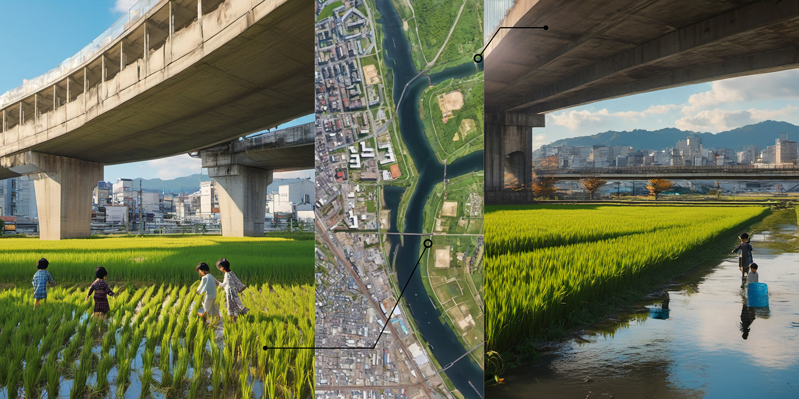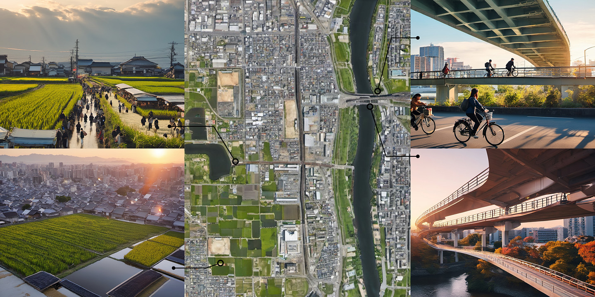
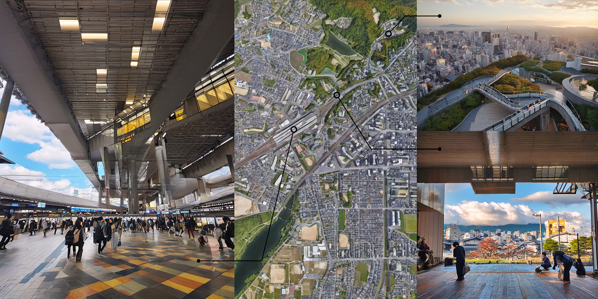
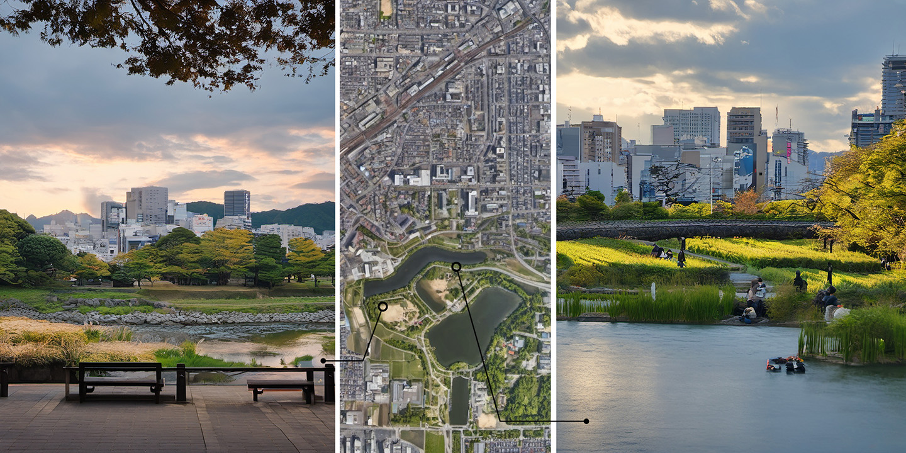
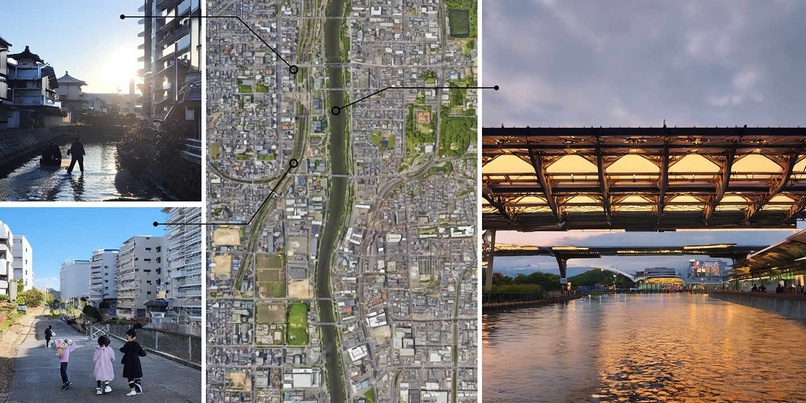
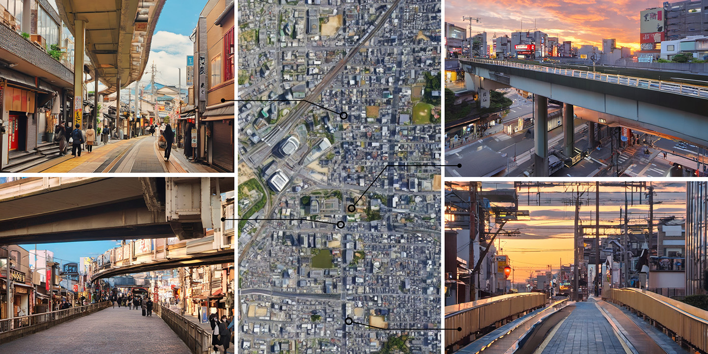
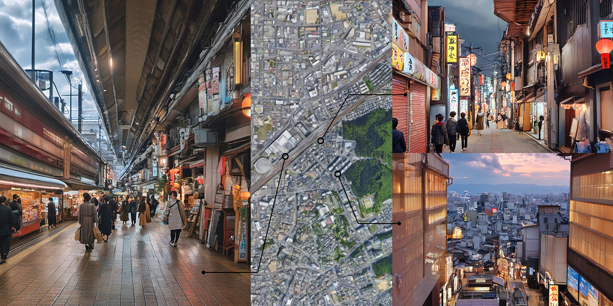
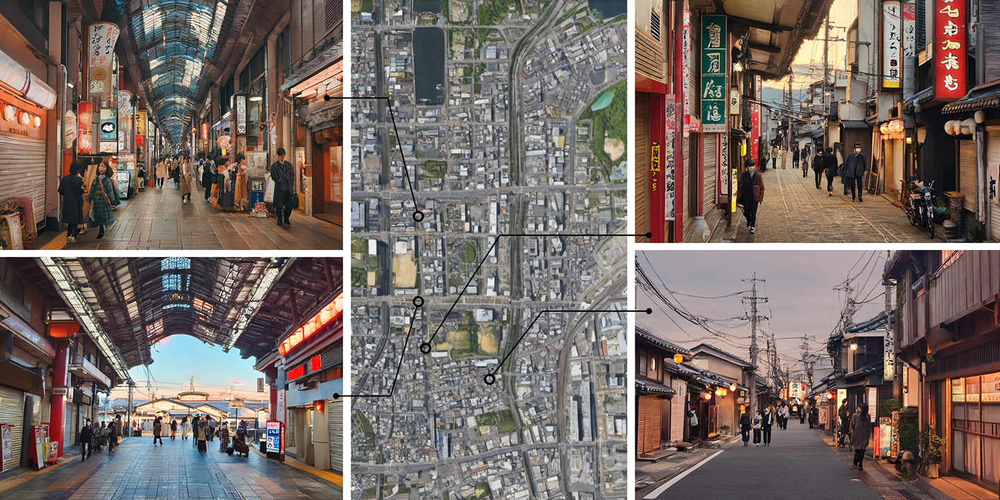
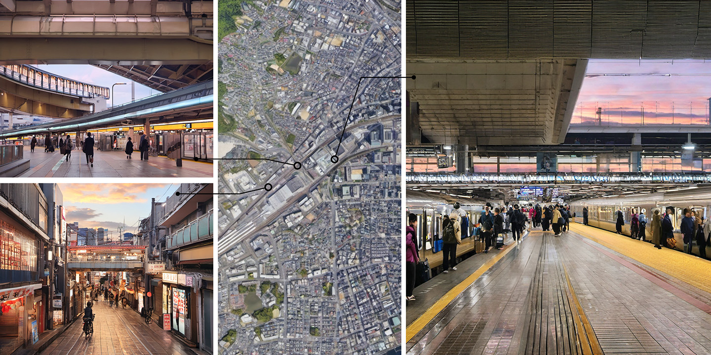
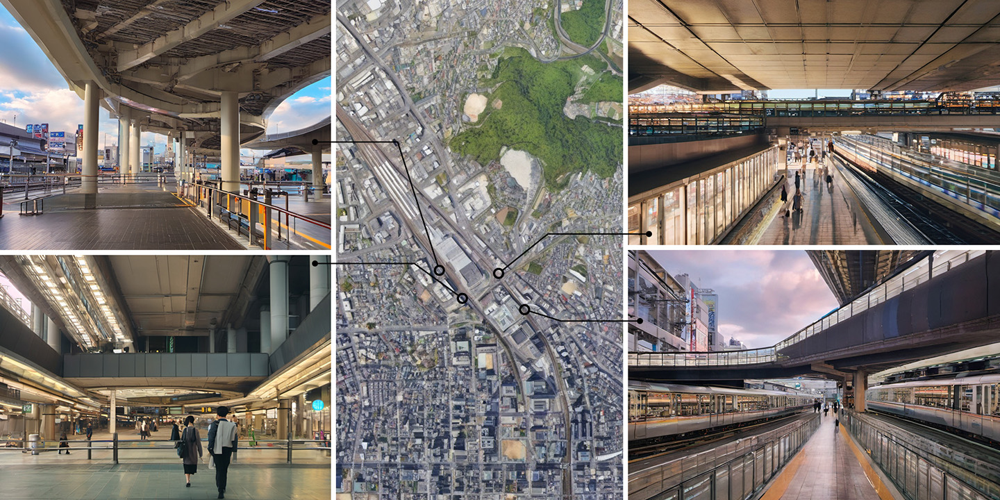
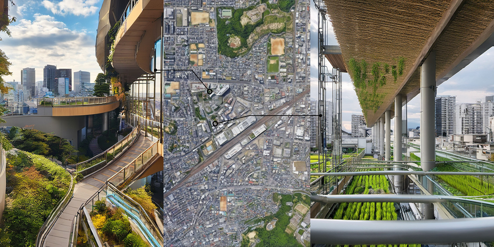

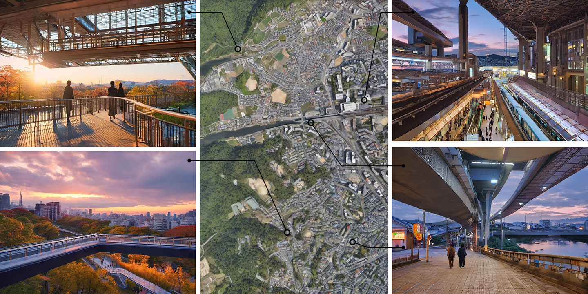
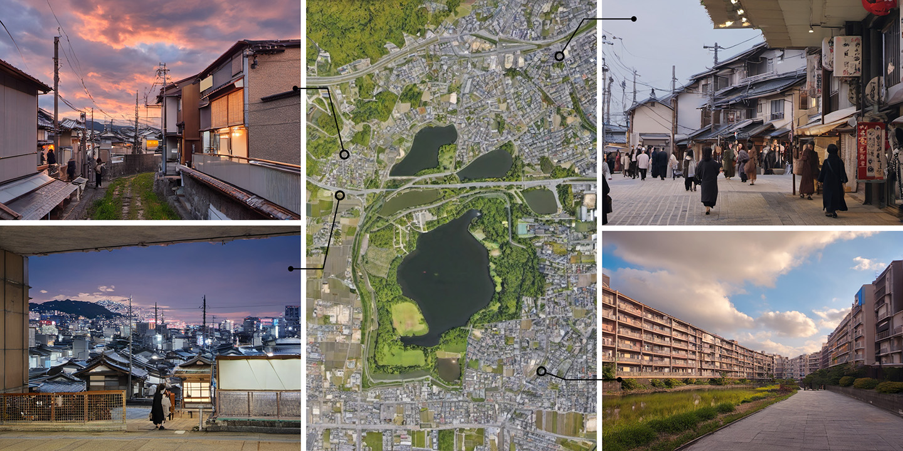
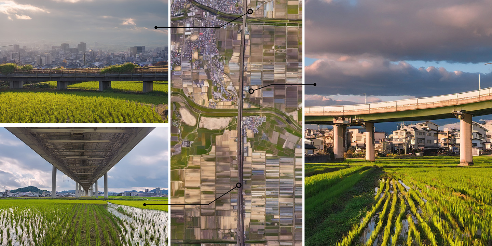
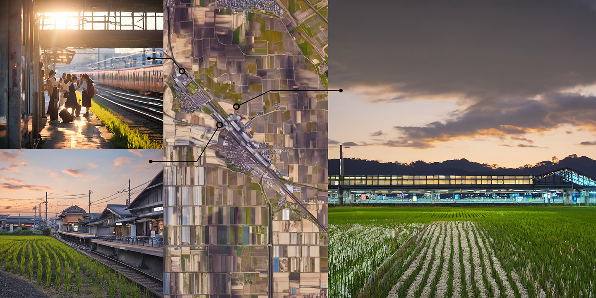
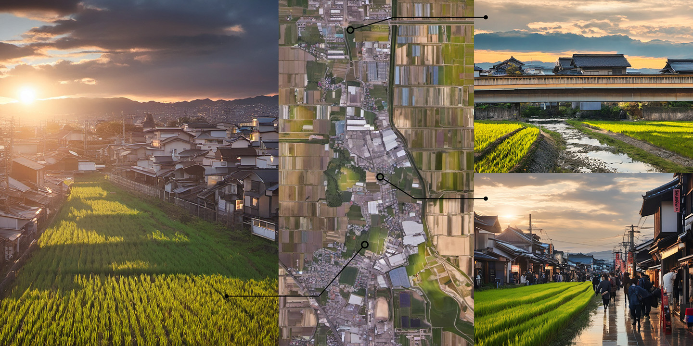
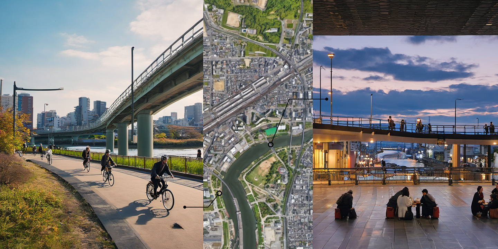
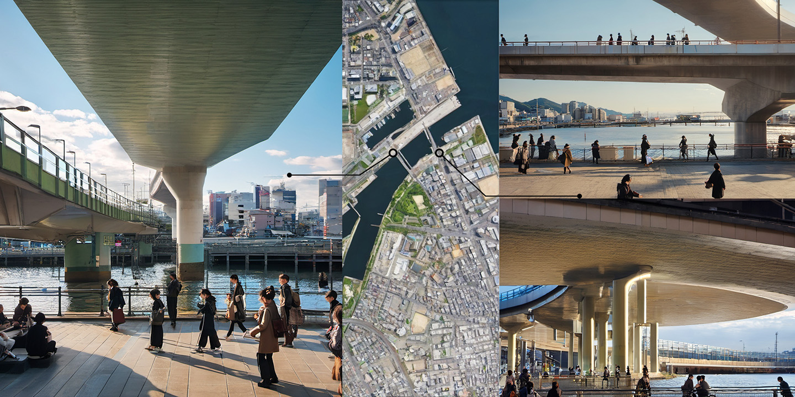
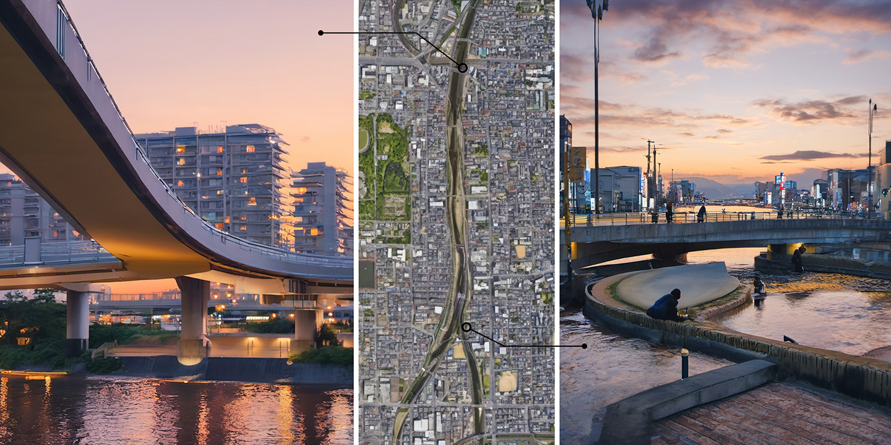
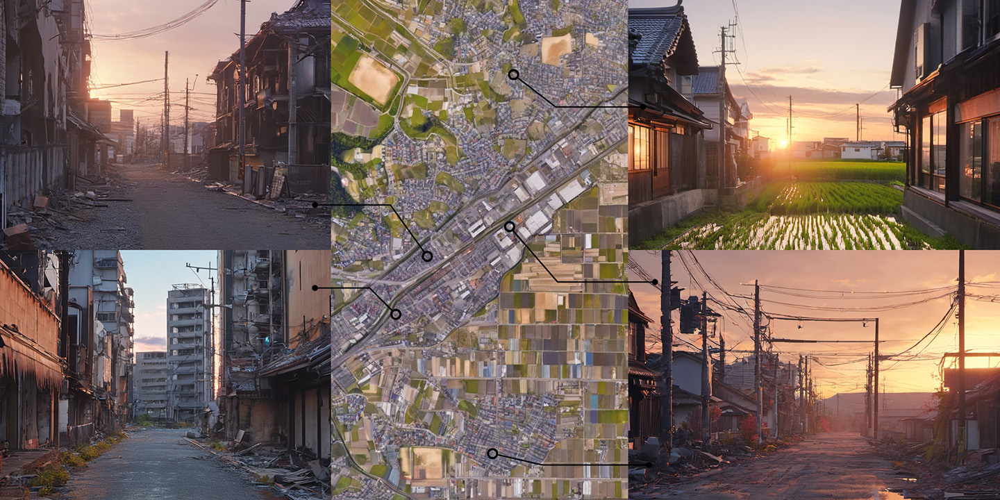
Stay Tuned...